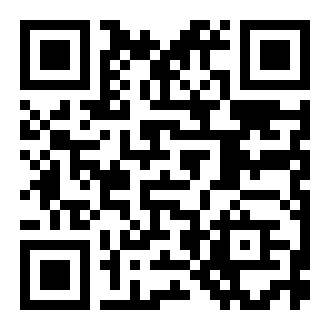

Project
Support
The program is free, has no ads and no paid features. Everything below is voluntary.
Zapret2UI is built by one person in their spare time. Providers keep changing their filters, so the strategies have to be reworked again and again: it is continuous work, not a one-off. Support helps keep it going.
Support with money
Through Tribute, which works from Telegram. Any amount, one-off or recurring. Nobody asks you to report anything or promises anything in return: it has no effect on what the program does.
Next to it is the same QR code shown on the program's main screen.

The author's VPN
DPI bypass lifts blocking by site name. When a resource is cut off by IP address, the program cannot help by design, and that is where a VPN is needed. The author runs his own service, and using it is another way to support the project.
- makeitfree.online The service's website.
- t.me/makeitfreevpn The service's Telegram channel.
The program itself does not need a VPN. If the blocking works by site name, the bypass handles it on its own without slowing the connection down, because the traffic goes straight to the server. How to tell the two apart: the "DPI check" button on the Diagnostics tab, explained in Troubleshooting.
Help without money
Feedback is often worth more than money: every provider behaves differently, and without reports from users there is no way to see the whole picture.
| What to do | Why it helps |
|---|---|
| Tell us what worked | Post in the channel which strategy started working, with which provider and in which city. Reports like that are what shapes the set of built-in strategies. |
| Report a problem | An issue in the repository with the journal output and the result of the "DPI check" run with the bypass turned off. A report like that almost always leads to a fix. |
| Star the repository on GitHub | Zero effort, and it is the only way people find the project through search. |
| Share it with people who need it | Many still install a VPN where a bypass by site name would have been enough. |
Who deserves thanks besides the author
Zapret2UI is a shell: the engine, the strategies and the proxy protocol were invented and written by other people. The full list, with exactly what came from where, has its own page: Credits. In short, that is bol-van for the engine, Flowseal for the strategies and the Telegram proxy, hyperion-cs for the DPI check method, and RaccoonLaptop for the idea of a shell in the first place.
The same page carries the licences for the program, the engine and the fonts.